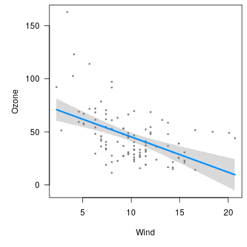
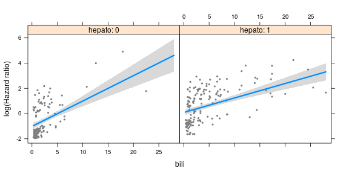
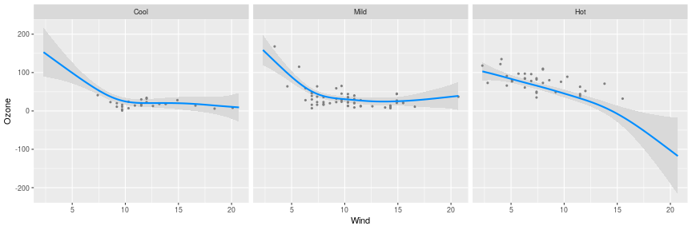

visreg is an R package for displaying the results of a fitted model in terms of how a predictor variable x is estimated to affect an outcome y. The implementation of visreg takes full advantage of object-oriented programming in R, meaning that it works with virtually any type of (formula-based) model class in R provided that the model class provides a predict method.
This site focuses mainly on illustrating the ideas and syntax of visreg as a way of providing online documentation. For more on the mathematical/statistical details of visreg, see the original article:
Installation
visreg is on CRAN, so it can be installed via:
install.packages("visreg")
Quick start guide
The basic idea of visreg is that you fit some type of model, then pass that model to visreg to be plotted:
fit <- lm(Ozone ~ Solar.R + Wind + Temp, data=airquality)
visreg(fit, "Wind")

The result is a plot of how the expected value of the outcome (Ozone) changes as a function of x (Wind), with all other variables in the model held fixed.
A visreg plot includes (1) the expected value (blue line) (2) a confidence interval for the expected value (gray band), and (3) partial residuals (dark gray dots).
Again, this works with any kind of model, not just linear regression models. Here is a Cox proportional hazards model with an interaction:
library(survival)
fit <- coxph(Surv(time, status!=0) ~ bili*hepato, data=pbc)
visreg(fit, "bili", "hepato", ylab="log(Hazard ratio)")

In this plot, we see how the hazard changes as a function of bilirubin levels for patients with/without an enlarged liver. For more on this type of plot, see Cross-sectional plots.
The models do not have to be linear, and we have the option of using ggplot2 as the graphics engine:
library(mgcv)
airquality$Heat <- cut(airquality$Temp, 3, labels=c("Cool", "Mild", "Hot"))
fit <- gam(Ozone ~ s(Wind, by=Heat, sp=0.1), data=airquality)
visreg(fit, "Wind", "Heat", gg=TRUE, ylab="Ozone")

For more on using visreg with ggplot2, see Visreg and ggplot2.
A number of options for surface plots are also provided, such as rgl plots:
library(splines)
fit <- lm(Ozone ~ Solar.R +ns(Wind, df=2)*ns(Temp, df=2), data=airquality)
visreg2d(fit, "Wind", "Temp", plot.type="rgl")
If your browser supports WebGL, you should be able to interact with the above plot, rotating it around to explore the surface.